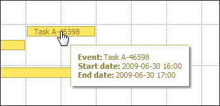

Tooltips
This extension allows to create tooltips over events in the scheduler which could be used to display additional information about event without need to actually 'open' event to check it.
To activate extension you need to include the dhtmlxscheduler_tooltip.js file:
<script src="codebase/ext/dhtmlxscheduler_tooltip.js"></script>
After that tooltips will be displayed with the default settings:

It's possible to configure and customize several parameters of the tooltip window:
dhtmlXTooltip.config.className = 'dhtmlXTooltip tooltip'; // sets the CSS classname of the tooltip window dhtmlXTooltip.config.timeout_to_display = 50; // delay of the rendering dhtmlXTooltip.config.delta_x = 15; // X position relative to the cursor (positive - margin to the right, negative - to the left) dhtmlXTooltip.config.delta_y = -20; // Y position relative to the cursor (positive - above the cursor, negative - below)
Special template scheduler.templates.tooltip_text is handling what should be displayed inside tooltip, it's possible to redefine it:
var format=scheduler.date.date_to_str("%Y-%m-%d %H:%i"); scheduler.templates.tooltip_text = function(start,end,event) { return "<b>Event:</b> "+event.text+"<br/><b>Start date:</b> "+format(start)+"<br/><b>End date:</b> "+format(end); };